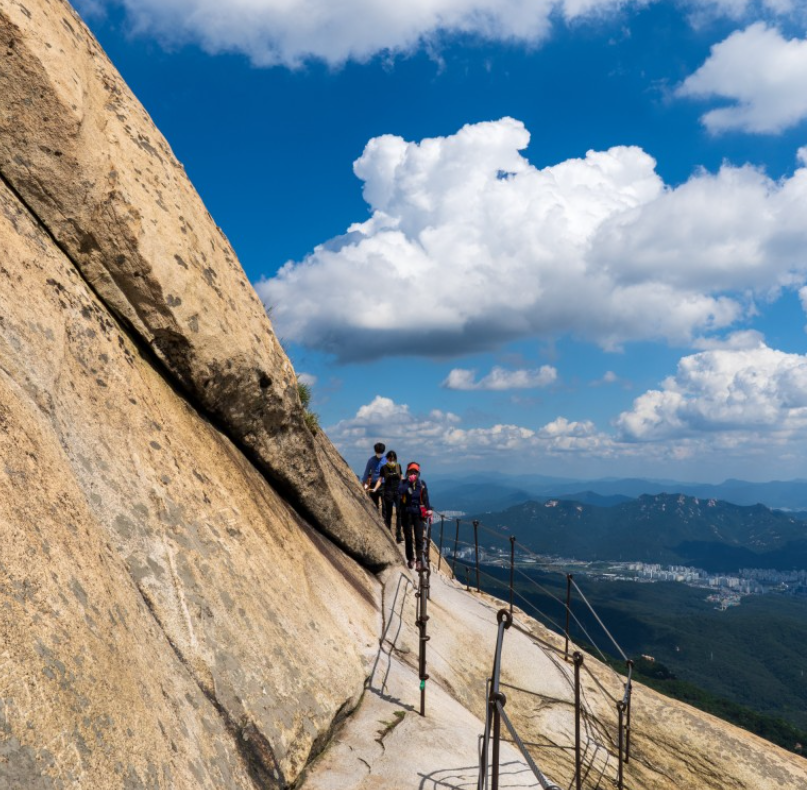
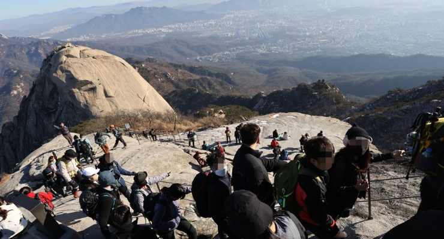
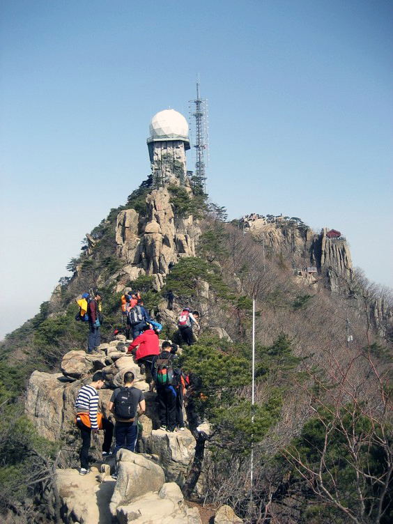

크으...


이게 우리가 가야 할 코스야^^...갈 수 있겠니..? 전망 좋은 백운대를 가는 초중급 코스를 보고 싶다면 여길 눌러봐. 블로그임!
크으...껌이지 승혀나 그치..?
 하이고야...
이번엔 등산 코스를 영상으로 예습해 오렴^^ 아래를 참고하세요.
자 그럼 이 두산을 각각 최소 2번씩은 갈 계획이야! 그럼 강한 체력이 뒷받침 되어야겠지??
아래 2가지 운동을 코코,사랑이와 열심히 지금부터 해야겠지? ㅎㅎ


그럼 수고하고 빠이팅!!!!